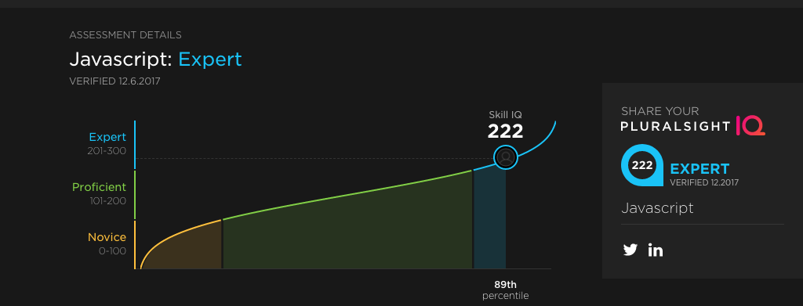

My Online Portfolio
I have worked in software engineering, architecting and leading teams to build great software my whole life. Over the years I have written or led teams that produced millions of lines of code.
Sharing the intellectual property of my former employers is not something I am willing to do without permission. Only on occasion do I feel I can post work I've contributed to with a clear conscience. Where possible I include links, or screenshots, or other descriptions. You won't find chunks of proprietary code here unless I have prior approval.
I have contributed on many levels over the years and have assisted in the creation of or supervised the generation of:
I am a certified project manager, a certified scrum-master, and have had training in many areas including modern web techologies such as React/Redux, AngularJS and Angular 4/5, and Ember.
I lost track of the many open source projects over the years, and only participate in a few that I have an active interest in and contribute mostly as a mentor though occasionally contribute actively.
Over the years this has included Apache HTTPD on linux, Firefox plugin and update processing, the Gnome desktop, XFree86, Lunix 4.6, several Slackware releases, phpMyAdmin, Apache HTTPD, modernizr and afew others.
I have many GitHub accounts. My public personal GitHub account is in the links at the footer which contains publicly accessable and viewable work projects, like this site and others. Most of my own inventions and work in process are held confidential.
At AofL I was a Director of Engineering. I began on the tools team, managing the sustainance and new development of the content management for AofL data driven content. After a few months my responsibilities shifted to a larger team and the development of single page applications using AofL best practices version of Angular and and Unity 4 and 5 mobile apps.
I led 4 teams: 2 Angular 1.x/2.0 teams, 2 Unity 4-5 teams, split between onshore and offshore teams in Califormia and the Ukraine.
We developed 6 single page applications and 6 Unity applications each with mimicked behavior. Our applications were data driven, providing a framework for defining the substance of the SPA or Unity app with variable content.
This position was approximately 60 percent hands on and included architecture and design guidance, code review, mentoring and hands on coding. I also supervised project management and requirements gathering and specification efforts and directed Jira workflow as the scrummaster of Agile 2-week sprints with demo days on Fridays.
At MHE I was a Software Engineer: Lead, responsible for development teams. I worked on two large projects.
MHE premier project is Connect, a product designed to assess, track and manage college curricula. I led a team to replace the assessment architecture, a natural follow on from my widget framework work at GE Fleet. This evolved into using Ember and components.
The results of our work is available online at Connect.
The second project was to build an ontology of learning using MHE 500 petabytes of high-quality content as source material. This involved many steps.
This product was to assist other MHE projects among them Create, an ebook initiative
I led a team to gather requirements, data models, and assess existing technologies and build POC and MVP prototypes of the architecture.
My team developed several prototypes of a machine learning application to create subject taxonomies which were used to populate a graph database on AllegroGraph.
Next we built GUI prototypes to illustrate the graph model and its potential uses. This angular and later ember single page appllication used a variety of graphing and drawing libraries and exercised using the taxonomies, ontologies, inference engines and data models we had created. We also produced taxonomy and ontology editors.
Final stages of my involvement were to gather requirements and build a tool to manage the machine learning, taxonomy creation, and ontology architecture including governence, rights management, assessment tracking, learning path discovery and remediation.
This is not the actual data model, but in general.
At GE Fleet I was hired as technical lead for architectures and team lead and mentor. The environment was Agile in a very pure form and it was challenging to develop a replacement system with the team spread over the northern hemisphere.
The objective was to replace a mainframe system to manage the leasing of large fleets of automobiles which had been developed on IBM mainframes. The 'lore' was that the system was so hard to use that an agent completing a leasing contract for Mary Kay had mistakenly ordered 50 pink pickup trucks with manual transmissions. I am not sure if that is true or not.
I spent most of my time building a widget framework and mentoring the local staff on JUnit and javascript in general. I led the team and helped improve javascript patterns. We used automated testing throughout. I found that a little organization and structure can fix a multitude of issues for a diverse team working in multiple locations and programming languages.
The framework needed to be simple, and it needed to be simple to write widgets. The framework I created was in two parts: a container and a widget. I have a long history with web components and most of them are neither, and have serious security issues, mostly because proper encapsulation and best practices are ignored. This framework was simple, under 2 k in total, and had no security issues, and you could cut and paste HTML to create a new widget.
I kept the code for this but I don't publish as I'm not sure who owns it since GE Fleet was sold a few years ago. The framework I constructed was very good, built from the ashes of a former framework that no one could get to work. I take a bit of pride in this.
My work part of the book "Lean UX" Page 45
I have been involved with many other projects, for example, AI pacemaker diagnostics devices; rule-driven and efficient in C#, and also quite proprietary.
I have worked on a couple defense related projects that I shouldn't even talk about: guided munitions and AWACS, and that's about all I should say.
I've spent my life in real time mostly for really great companies and it taught me rigor, completeness, accuracy, timeliness, and most of all all about people. I miss my colleagues at IBM, Honeywell, ABB, and Delta and many more places.
I will continue to augment this page as seems reasonable, keeping in mind intellectual property and federal law.
For a copy of my latest resumes and a cover letter click My Resume.
I'm often asked about javascript proficiency. I'm an expert. I've been certified by W3 and I took a Pluralsight assessment in Dec 2017. Its not an easy assessment.
I invite you to take the assessment yourself.
I'm also certified in mongo (by mongo) javascript, jquery, css (by W3) angular1.4-5.x (by angular)
